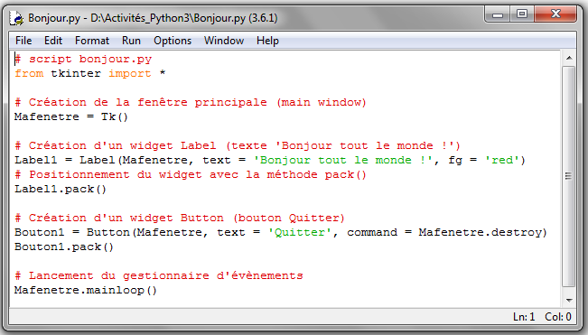
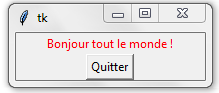

Scripts
Un programme (code source) est une séquence d'instructions.
Dans le cas d'un programme en langage Python, on parle souvent de script Python.
Un script se présente sous la forme d'un fichier texte avec l'extension .py
Voici un exemple de script Python :
Télécharger le et copier le dans votre dossier de travail
Le code source d'un script s'ouvre avec un éditeur de texte

Démarrer l'IDLE Edupython 
L'IDLE muni d'un interpréteur permettra d'exécuter le script.
Ouvrir le script depuis Edupython.
Une fois chargé, 2 solutions s'offrent à vous pour l'exécuter:
 ou (Ctrl + F9)
ou (Ctrl + F9)

Créé avec HelpNDoc Personal Edition: Environnement de création d'aide complet